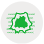

What is GOAT?
GOAT or (Geo Open Accessibility Tool) is meant to be an open source, interactive, flexible and useful web-tool for accessibility planning. It is developed at the Technical University of Munich (TUM). At the moment the GOAT just learns to walk, accordingly frequent enhancements and extension will come on a regular basis.

Open Data & Open Source
The project iteself is open source and built with powerful open source software. This allows everybody to use, modify and contribute! Open data is the backbone of GOAT, however all sort of data can be included into an own instance of GOAT.
Scenario Building
Developing scenarios and assessing the effect on accessibility is a matter of seconds. There is no need for a time consuming rebuilt of the network nor data preparation.

Realistic & Interactive Calculations
The analyses are as realistic and interactive as possible. There is done frequent research on modelling walking and cycling more realistic.